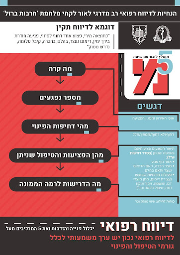
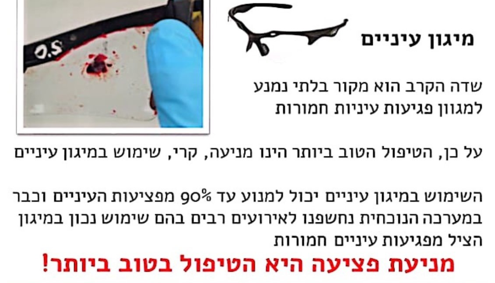
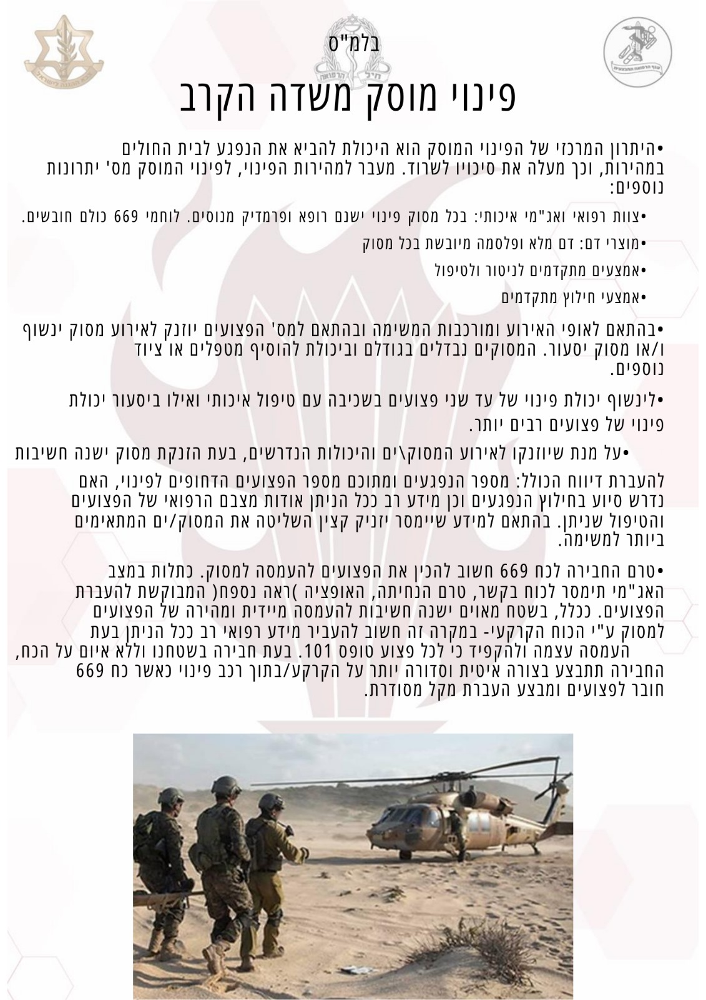

החניך יאפיין את המוקשים בתפיסה הרלוונטים לתפקידו העתידי.
החניך יסביר את עקרונות ההימנעות מהמוקשים.
"מוקשים" בתפיסה
אודות
פותח עבור:
בית הספר לפיקוד והדרכה - קריית ההדרכה
רמ"ד טי"ל:
רס"מ שלומי אוגרן
פיתוח:
רב"ט ניצן סלומון, רב"ט אדוה אבא, סמל גילי אלבז
עיצוב:
טור' לוטם גרוס
מומחי תוכן:
רס"ם עדן בן חמו
גרסה:
אוקטובר 2024
תהליך התפיסה
מאפייני הקליטה
מאפייני שלב העיבוד
סטראוטיפים ואפקטים
מניעת המוקש
מהו תהליך התפיסה?
תהליך התפיסה:
תהליך קליטה ופענוח של גירויים
המגיעים דרך ה
חושים, במטרה להעניק משמעות לסביבה.
התהליך התפיסה בו אנו קולטים גירויים מהסביבה באמצעות חושים. אנו מפרשים אותם על פי המוכר לנו
או הופכים אותם לבעלי משמעות עבורנו.
אנו מפרשים אותם על פי המוכר לנו או הופכים אותם לבעלי משמעות עבורנו.
כיצד נאבחן את תהליך התפיסה
נקלוט את התמרור בעזרת הראייה
ניזכר מהי משמעות התמרור
נקבל החלטה אם לעצור
(ברור שכן)
כיצד תהליך התפיסה מתבצע
קליטת מידע:
זיכרון חושי - "הזיכרון הסנסורי"
עיבוד המידע:
הזיכרון לטווח קצר - "הזיכרון העובד"
אחסון או שליפה:
הזיכרון לטווח ארוך - "הזיכרון"
הזיכרון הקובע את תהליך קבלת ההחלטות הוא:
זיכרון לטווח קצר - "הזיכרון העובד".
אפקט מסיבת הקוקטייל
תופעה בה אדם מפנה את הקשב לגירוי שמיעתי מסוים תוך סינון רעשי רקע.
דמיינו שאתם נמצאים במסיבה, הכל רועש סביבכם ולמרות זאת ברגע שיקראו בשימכם אתם תשמעו את מה
שאומרים לכם ותתעלמו לרגע מרעשי הרקע.
הקליטה היא סלקטיבית
אנו בוררים מתוך המידע המוצג בפנינו רק את מה שנראה לנו כחשוב ואת שאר המידע מנפים
סלקטיביות הקליטה מנוהלת ע"י מנגנון מיקוד הקשב אשר מושפע מ-3 גורמים עיקריים
המשפט שאתם קוראים עכשיו הינו דוגמה קלאסית לקליטה סלקטיבית, לחצו על הלבנה וגלו מה מה
הבעיה במשפט
הגורמים המשפיעים על מיקוד הקשב
-בולט-
נקלוט גירוי אינטנסיבי, חזק ובולט על פני סביבתו
-מעניין-
התעניינות בנושא מסוים מעוררת את המוח שלנו ללוט גירויים רלוונטיים לנושא
-מוכר-
גירוי מוכר מהעבר ייקלט בעדיפות ראשונה
הטייה קוגניטיבית = "מוקשים" בתפיסה
דפוס או נטייה שיטתית של בני אדם לטעות בחשיבה או בכושר שיפוט, זיכרון, תפיסה והערכה נפוצות ונחשבות
לנורמליות.
דניאל כהנמן ועמוס טברסקי ז"ל, 1972
סטראוטיפ
מצב שבו מתרחשת הכללת יתר של אמונות הנוגעות למאפיינים של קבוצת אנשים מסוימת והחלתם על כל
חברי הקבוצה
הסטראוטיפ מאפשר התמודדות מהירה מול כמויות גדולות של מידע ואינו נושא בהכרח אופי שלילי.
סירטון סטראוטיפים
אפקט ההילה
מצב שבו אפשר לקבל רושם מוטעה על בן אדם, לטובה או לרעה.
כאשר מסיקים מתכונה אחת שלו על התנהגות הכללית.
תכונה דומיננטית אחת מאפילה על שאר תכונותיו של האדם ומשפיעה על הערכת האדם הכללית.
סירטון על אפקט ההילה
האפקט הפיגמליון
1. שידור הציפיות על ידי המפקד
2. החייל קולט את הציפיות, מפנים ופועל בהתאם.
3. פעולות החייל מאשרות את הציפיות ומחזקות אותן
סירטון על אפקט הפיגמליון
אפקט הייחוס
הנטייה של האדם ליחס את כישלונותיו שלו לגורמים ולנסיבות חיצוניים, בעוד את כשלונותיו של
אדם אחר הוא מיחס לגורמים פנימיים -אישיים.
הנטייה של האדם ליחס את הצלחותיו לתכונותיו האישיות, בעוד את הצלחותיו של אדם אחר הוא מיחס
לגורמים חיצוניים ומקריים.
דוגמאות לאפקט הייחוס.
סירטון לאפקט הייחוס
אפקט הראשונות ואחרונות
לרושם ראשוני משקל גדול בהתרשמות הכללית, גם אם רושם מאוחר יותר סתור רושם ראשוני זה.
הפעולות האחרונות שנעשו הן המשפיעות ביותר על הערכה מסכמת.
סירטון על אפקט הראשונות והאחרונות
אפקט העדר
הנטייה לעשות או להאמין בדברים בגלל רבים אחרים שעושים או מאמינים כך.
סירטון של אפקט העדר
Sheeple - שילוב של "כבשים" ו "אנשים"
באופן רשמי המילה מוגדרת במילון בעזרת דוגמא מעולם הטכנולוגיה:
צרכני חברה מסוימת משולים לעדר של כבשים, שרץ לקנות כל פיתוח או גאדג'ט חדש.
חינוך וערכים
ההורים שלנו או האנשים הבוגרים בחיינו לפעמים מחנכים אותנו להרגלים וערכים גם בלי לשים לב
לדוגמה, אמא שמפחדת מכלבים תלמד את ילדיה לפחד גם הם מכלבים מבלי שתשים לב, מהתגובה שלה
לכלבים הילדים למדים שכלב הוא דבר מפחיד.
נורמות חברתיות
נורמות חברתיות הן כללי התנהגות בלתי כתובים שאנשים נוהגים לפעול לפיהם כדי להשתלב ולהתאים
לסביבה החברתית שלהם, לכל אוכלוסיית אנשים בעלת מאפיינים משותפים יש נורמות שונות
לדוגמה, כשנטייל ברחבי תל אביב לא נראה את אותו סגנון לבוש כמו שנראה בבני ברק משום
שהנורמות במקומות האלה בנושא הלבוש הן לא אותן נורמות חברתיות.
חוויות קודמות
מה שחווינו או למדנו בעבר, משפיע עלינו ועל ההתנהלות היומיומית שלנו כיום.
לדוגמה, אם מיחשהו אכל המבורגר בעבר ולאחר מכן כאבה לו הבטן, גם אם זה לא בהכרח בגלל
ההמבורגר, בפעם הבאה הוא יהסס לפני שיאכל המבורגר
נטיות מולדות
נטיות, כישורים, יכולות ותכונות אישיות שהאדם נולד איתם
לדוגמה, אדם שנמולד עם קול יפה או שמיעה מוזיקלית יוצאת דופן
פרשנות
.המידע לא נתפס כפי שהוא, אלא מקבל משמעות שונה או נוספת לאחר שנקלט במוח.
כל אדם מעניק פרשנות שונה לגירויים, בהתאם לארבעה פרמטרים.
אז איך לא לדרוך על המוקשים?
מודעות
מודעות כללית -
הידיעה כי הטיות קיימות
מודעות אישית - מה הן ההטיות "המועדפות" שלי
ריבוי נקודות הערכה
נבצע הערכה במספר נקודות זמן כדי לא ליפול במוקש האחרונות\ראשונות.
כלי הערכה מגוונים
נשתמש במירב הכלים שעומדים לרשותינו:
שיחות.
מבדקים.
מבחנים.
ראיונות.
התנסויות.
הערכה ע"י מעריך חיצוני או מספר מעריכים
כאשר אנו נמצאים בליבת הסיטואציה, קשה לנו לראות את התמונה באופן מדויק ואדם חיצוני יכול
לסייע לנו בהערכת מצב או אדם.
הגדרת קריטריונים (מדדים) להערכה
נגדיר קריטריונים ברורים, אחידים ורלוונטים להערכה, על מנת לשפר את האובייקטיביות שלה.
"כל מה שילד צריך, זה מבוגר אחד שיאמין בו"
דגשים!
1. יש לוודא כי קיים ציוד תירגול מספק עבור כל דרג בנפרד.
2. את תכני האימון נדרש לתאם למול נציג הרפואה בבסיס האימונים הפיקודי הרלוונטי, ציוד רפואי הינו באחריות
יחידה אורגנית בסדיר ובמילואים.
אימון רענון למצילי חיים
יש לוודא כי הריענון מקבל ביטוי בלו"ז האימון הפלוגתי/גדודי ומועבר על ידי מדריכים המוכשרים לכך.
ריענון מקצועי לחובשים
בניית תוכנית אימון מותאמת לדרג החובשים המחלקתיים והפלוגתיים.
אימון צוות רפואה
נוכחות כלל בעלי התפקידים, השפעה על תכני האימונים בתכנון המקדים, מיקוד בעבודת צוות ובניית אורגניות.

המשפט שאתם קוראים עכשיו הינו דוגמה קלאסית לקליטה סלקטיבית, לחצו על הלבנה
וגלו מה מה הבעיה במשפט
מגנים על העיניים מפגיעת רסיסים, ומקטינים משמעותית פגיעה
חודרת בעיניים.
אי שימוש נובע קודם כל מחוסר מודעות.
ניתן להתגבר על אדים באמצעות מטלית ייעודית המגיעה עם המשקפיים. אם המשקפיים שרוטים או שבורים
–נדרש להחליף אותם.
מרכיבי משקפי ראיה זכאים עדשות מיוחדות המורכבות בתוך משקפי המגן.

מיגון קרמי אינו בהכרח טוב יותר, כי הוא מתאים בעיקר
למתאר ירי, ואילו שכפ״צ נותן מענה הרבה יותר טוב
למתאר רסיסים, שהינו שכיח יותר.
חשד לפציעה בבית החזה, בנוסף להלם עמוק, שלא מגיב לניקור
במחט ומתן נפח, וכן חשד לפגיעת חזה עם סטורציה
הנמוכה מ- 85% למרות שימוש בחמצן.
הלם דימומי, פגיעת ראש בפני עצמה (גם אם ה- GCS ירוד) או
פגיעת חזה – אינן מהווים התוויה לנתיב אוויר
דפיניטיבי.
המפקד לא מאחר, הוא מתעכב
המפקד לא נופל, הוא בודק את השטח מקרוב
המפקד לא טועה בניווט, הוא מחפש דרך קיצור
המפקד לא מתעפץ, הוא ממצמץ ארוכות
המפקד לא ישן, הוא נוח
המפקד לא שוכח, הוא זוכר דברים אחרים
סדיר
מילואים
לוחם - מציל חיים
1.תירגול באמצעות גורמי הרפואה אחת לחודש
2.יבצע ריענון אחת לחציון - הנחת ח"ע CAT על גדם- על גפה חשופה ולא על מדים/בגד
לפני תעסוקה מבצעית (במסגרת אל"ת/אל"ל)
חובש/לור"מ
1. אימון חו"פ אחת לחציון + אימון מס"ר 1 לשנה
2. 1 לחודש הנחת ח"ע CAT על גבי גדם כאשר בכל תירגול יבצע החובש 3 הנחות
1. אימון חו"פ באל"ת/אל"ל
2. הנחת ח"ע CAT בכל שמ"פ
מטפל בכיר
פראמדיק - 4 משמרות כשירות בחודש
רופא - 25 ימי כשירות בשנה בבתי חולים על פי הגדרת ענף רפמ"צ
פראמדיק - ביצוע 4 משמרות מד"א ב-3 שנים האחרונות.
דגש!
את האימונים במהלך התעסוקה נדרש לתאם מול הרפואה המרחבית.
דגשים להכנה לפינוי, אופציות חבירה והנחתה

מתן מענה ראשוני לתגובת דחק
במהלך הלחימה, בוצעה סכמת יהלו"ם בנפגעי תגובת קרב בצורה טובה, דבר המאפשר את רציפות הלחימה והקל על
מצב הפצועים תוך צמצום סיכוי להתפתחות PTSD - יש להדגיש את חשיבות סכמת היהלו"ם, לתרגל את הסכמה בכל
טיפול בנפגע חרדה ולוודא את הבנת חשיבותה.